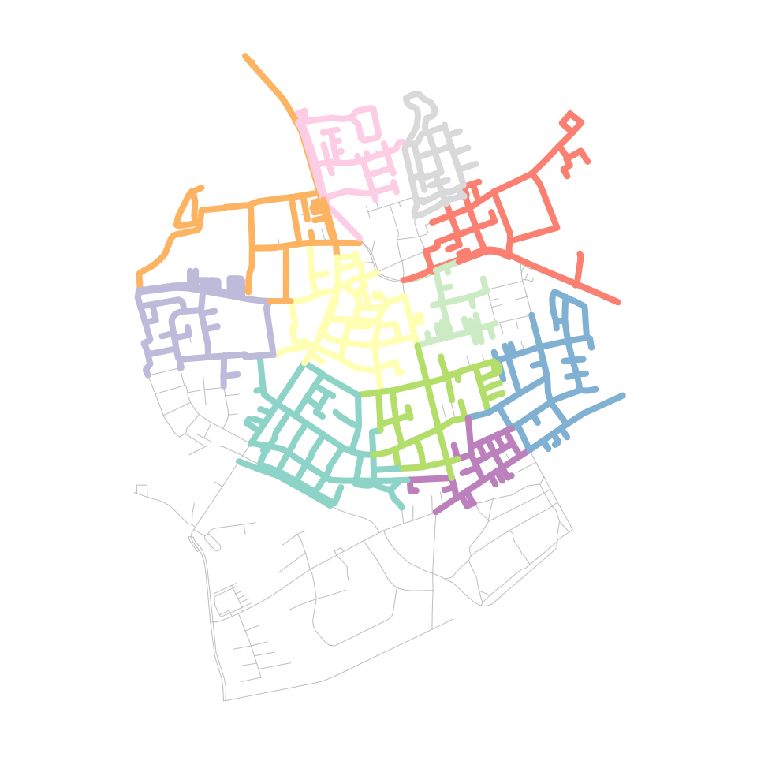
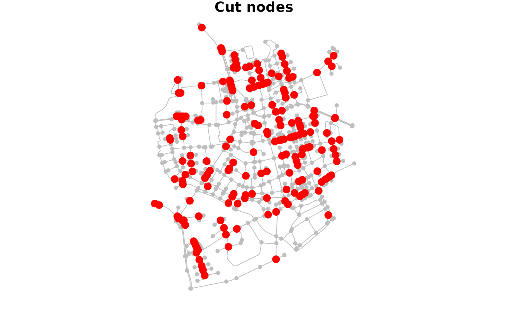
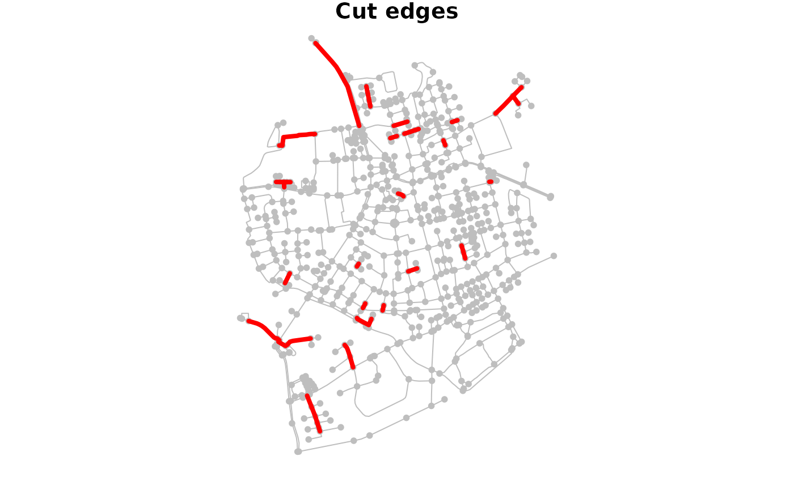
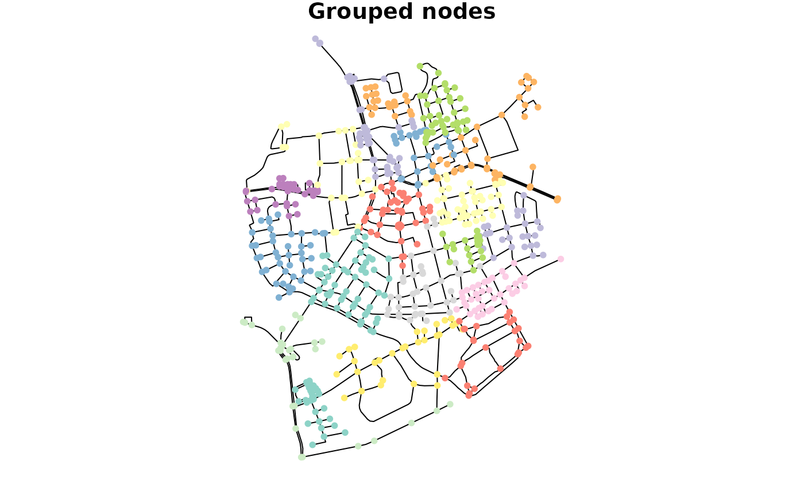
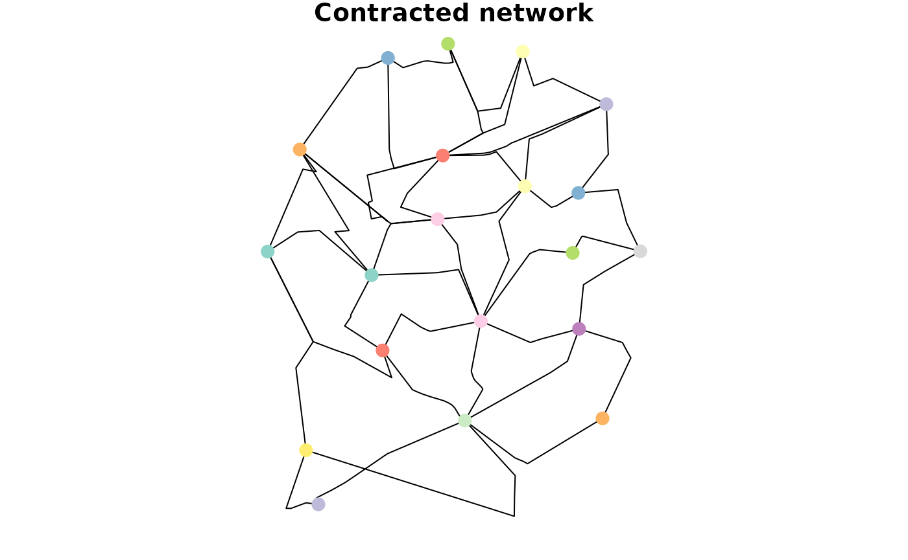
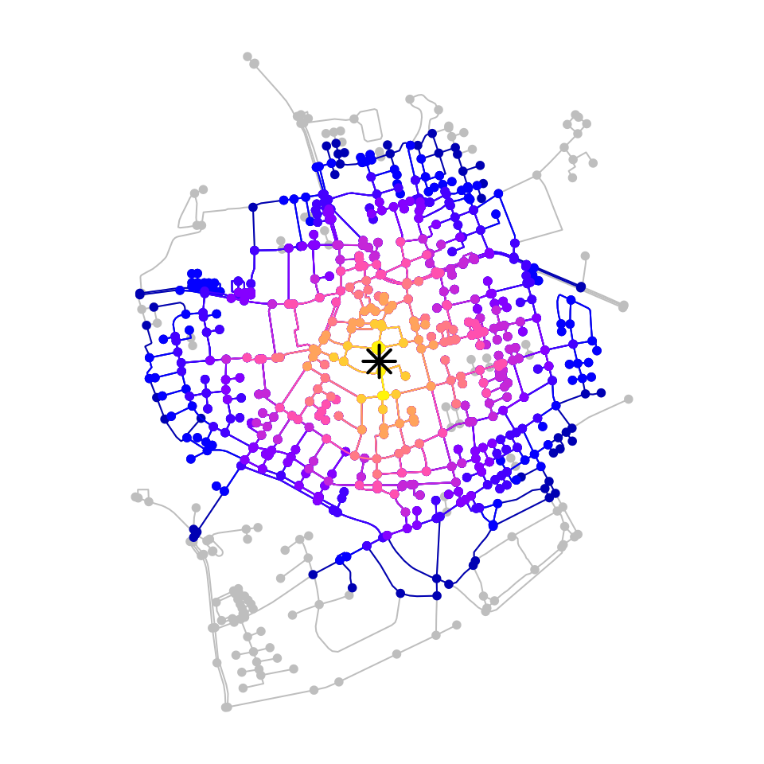
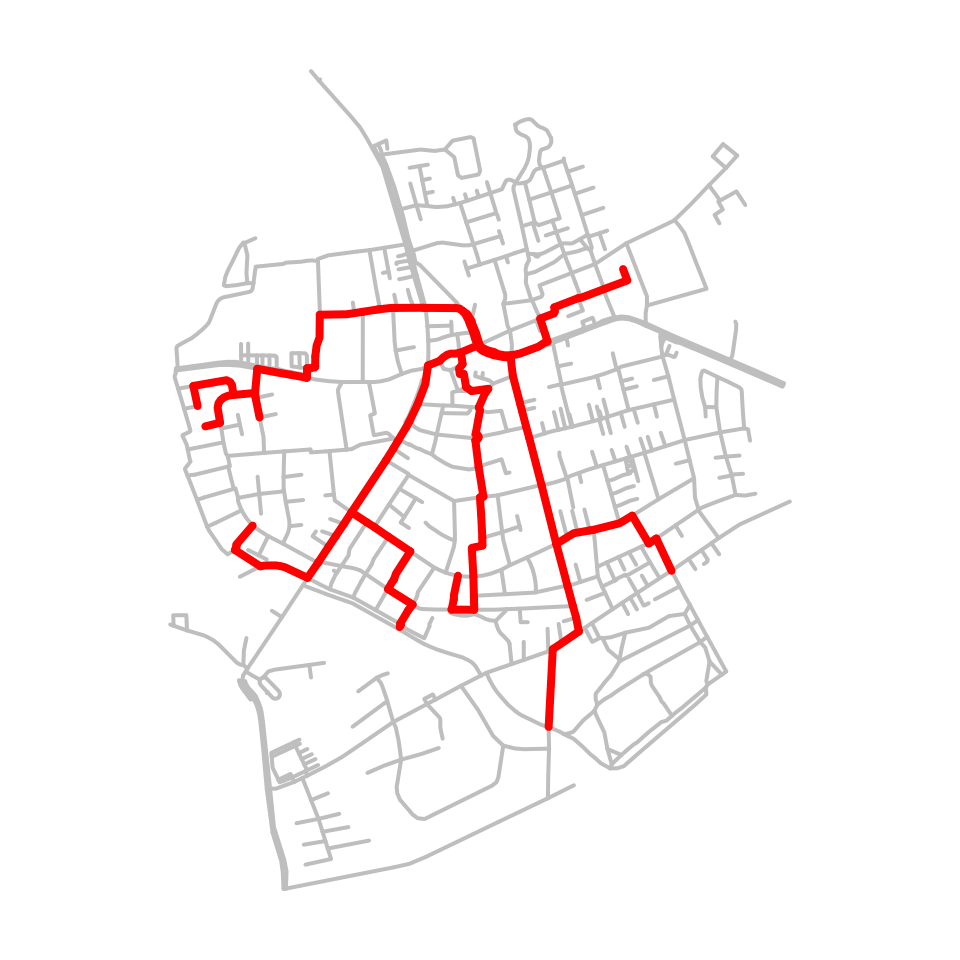
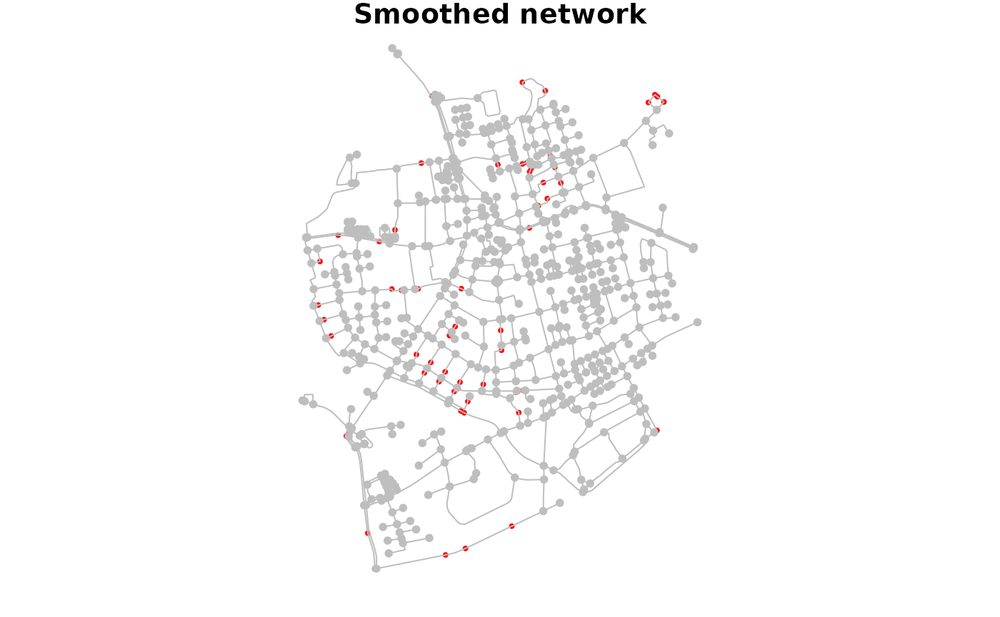

In some of the previous vignettes they were already mentioned here and there: spatial morpher functions. This vignette describes in more detail what they are and how to use them.
Morphing networks is a functionality that has its roots in
tidygraph. It allows you to temporarily change the
topology of the original network with the
tidygraph::morph() verb, perform some actions on this
“morphed state” of the network using dplyr verbs, and
finally merge the changes back into the original network with the
tidygraph::unmorph() verb. How the topology is changed
during morphing depends on the used morpher function, which you
provide to tidygraph::morph().
You can choose between a wide range of available morpher
functions in tidygraph. The names of these functions
all start with to_. The sfnetworks package
adds a set of dedicated spatial morphers, having names starting
with to_spatial_. They will be presented later in this
vignette. Lets first show a practical example to get a better idea of
how morphing can be useful.
In network analysis, community detection algorithms allow you to
discover cohesive groups in networks, based on specific network
properties. There is a large offer of (wrappers around) such algorithms
in tidygraph, see here.
Most of them are intended for and can only be applied to the nodes. For
example, the often used Louvain
algorithm, that seeks to optimize modularity
of the partition.
But what if we want to detect communities within edges?
Then, the tidygraph::to_linegraph() morpher comes in handy.
It converts a network into its linegraph, where nodes become edges and
edges become nodes. That is, we can morph the network into its
linegraph, run the community detection algorithm on the nodes
of the morphed state, attach to each node information about the group it
is assigned to, and automatically merge those changes back into the
edges of the original network.
net = as_sfnetwork(roxel, directed = FALSE) %>%
st_transform(3035)
grouped_net = net %>%
morph(to_linegraph) %>%
mutate(group = group_louvain()) %>%
unmorph()
grouped_net#> # A sfnetwork with 701 nodes and 851 edges
#> #
#> # CRS: EPSG:3035
#> #
#> # An undirected multigraph with 14 components with spatially explicit edges
#> #
#> # Node data: 701 × 1 (active)
#> geometry
#> <POINT [m]>
#> 1 (4151491 3207923)
#> 2 (4151474 3207946)
#> 3 (4151398 3207777)
#> 4 (4151370 3207673)
#> 5 (4151408 3207539)
#> 6 (4151421 3207592)
#> # ℹ 695 more rows
#> #
#> # Edge data: 851 × 6
#> from to name type geometry group
#> <int> <int> <chr> <fct> <LINESTRING [m]> <int>
#> 1 1 2 Havixbecker Strasse residential (4151491 3207923, 4151474… 14
#> 2 3 4 Pienersallee secondary (4151398 3207777, 4151390… 2
#> 3 5 6 Schulte-Bernd-Strasse residential (4151408 3207539, 4151417… 2
#> # ℹ 848 more rows
# The algorithm detected 34 communities.
grouped_net %>%
activate("edges") %>%
pull(group) %>%
unique() %>%
length()
#> [1] 33In all grouping functions in tidygraph, the group index
1 belongs the largest group, the index 2 to
the second largest group, et cetera. Lets plot only the first third of
the 34 groups, to keep the plot clear.
plot(st_geometry(net, "edges"), col = "grey", lwd = 0.5)
grouped_net %>%
activate("edges") %>%
st_as_sf() %>%
transmute(group = as.factor(group)) %>%
filter(group %in% c(1:11)) %>%
plot(lwd = 4, add = TRUE)
Another application of the tidygraph::to_linegraph()
morpher is to find “cut edges” in the network. These are edges that
break the connectivity of a connected component when they are removed.
Hence, they have a crucial function in preserving the connectivity of a
network.
new_net = net %>%
mutate(is_cut = node_is_cut()) %>%
morph(to_linegraph) %>%
mutate(is_cut = node_is_cut()) %>%
unmorph()
cut_nodes = new_net %>%
activate("nodes") %>%
filter(is_cut) %>%
st_geometry()
cut_edges = new_net %>%
activate("edges") %>%
filter(is_cut) %>%
st_geometry()
plot(net, col = "grey", main = "Cut nodes")
plot(cut_nodes, col = "red", pch = 20, cex = 2, add = TRUE)
plot(net, col = "grey", main = "Cut edges")
plot(cut_edges, col = "red", lwd = 4, add = TRUE)
Internally, a morphed state of a network is a list, in which each
element is a network on its own. Some morphers create a list with only a
single element, like the linegraph example above, while others create a
list with multiple elements. For example, the
tidygraph::to_components() morpher splits the original
network into its unconnected components, storing each component as a
separate network in the list.
morphed_net = morph(net, to_components)
morphed_net#> # A sfnetwork temporarily morphed to a components representation
#> #
#> # Original graph is an undirected multigraph with 14 components
#> # consisting of 701 nodes and 851 edges
#> # with CRS EPSG:3035
#>
class(morphed_net)
#> [1] "morphed_sfnetwork" "morphed_tbl_graph" "list"
length(morphed_net)
#> [1] 14All dplyr verbs for which a tbl_graph method exists can also be
applied to a morphed state. Technically, that means that the same
operation is applied to each element in the list. In
sfnetworks, it is also possible to use
sf::st_join() and sf::st_filter() on morphed
states of networks.
The mapping back to the original network is stored in
.tidygraph_node_index and .tidygraph_edge_index
columns, for nodes and edges respectively. These columns contain the
indices (i.e. rownumber) of the original nodes and edges. During
unmorphing these indices are used to join the changes made in the
morphed state back into the original network. A
dplyr::left_join() semantic is applied here. That means
that the network has the same number of nodes and edges after
unmorphing as it had before morphing, no matter if either the morpher
function or the subsequent operations on the morphed state added or
removed any nodes or edges. Whenever an original node or edge index
occurs more than once in a morphed state, only the information added to
its first instance is merged back into the original network.
Morphing is meant to make temporary changes to your network.
However, what if you want to make lasting changes? Good news!
The same morpher functions that are used for temporary
conversions during morphing can be used for lasting conversions when you
provide them to the tidygraph::convert() verb instead. In
that case, the morphed state of the original network will be returned as
a new network itself. This is mainly meant for those morpher functions
that produce a morphed state with a single element. For example
converting the network into its complement, where nodes are connected
only if they were not connected in the original graph.
convert(net, to_complement)#> # A sfnetwork with 701 nodes and 244503 edges
#> #
#> # CRS: EPSG:3035
#> #
#> # An undirected simple graph with 1 component with spatially implicit edges
#> #
#> # Node data: 701 × 2 (active)
#> geometry .tidygraph_node_index
#> <POINT [m]> <int>
#> 1 (4151491 3207923) 1
#> 2 (4151474 3207946) 2
#> 3 (4151398 3207777) 3
#> 4 (4151370 3207673) 4
#> 5 (4151408 3207539) 5
#> 6 (4151421 3207592) 6
#> # ℹ 695 more rows
#> #
#> # Edge data: 244,503 × 2
#> from to
#> <int> <int>
#> 1 1 701
#> 2 1 700
#> 3 1 699
#> # ℹ 244,500 more rowsThe internally created .tidygraph_node_index and/or
.tidygraph_edge_index columns are present in the network
returned by tidygraph::convert(). If you rather don’t have
that, set .clean = TRUE.
Whenever the morphed state consists of multiple elements,
only one of them is returned as the new network. By default that is the
first one, but you can pick an element yourself by setting the
.select argument, e.g. .select = 2.
A lot of morpher functions are offered by tidygraph. See
the overview of them here.
Most of them should work without problems on sfnetworks, and can be
useful for spatial network analysis. On top of that offer,
sfnetworks adds some additional spatial morphers
that fit use-cases for which tidygraph does not have an
implemented morpher function. See the overview of them here.
Below they will all be shortly introduced.
The to_spatial_contracted() morpher groups nodes based
on given grouping variables, and merges each group of nodes into a
single, new node. The geometry of this new node will be the centroid of
the geometries of all group members. Edges that were incidents to any of
the group members are updated such that they are now incident to the new
node. Their boundaries are updated accordingly to preserve the valid
spatial network structure. The morphed state contains a single
sfnetwork.
To create the groups of nodes, the morpher accepts grouping variables
as ... argument. These will be evaluated in the same way as
arguments to dplyr::group_by(). That means you can group
the nodes based on any (combination of) attribute(s). For an example of
grouping based on a spatial clustering algorithm, see the Network
pre-processing and cleaning vignette.
A point of attention is that contraction introduces new multiple
edges and/or loop edges. Multiple edges are introduced by
contraction when there are several connections between the same groups
of nodes. Loop edges are introduced by contraction when there are
connections within a group. Setting simplify = TRUE will
remove the multiple and loop edges after contraction. However, note that
this also removes multiple and loop edges that already existed before
contraction.
The to_spatial_contracted() morpher gives the options to
summarise attributes of nodes in a group. By setting the
summarise_attributes argument you can specify on a
per-attribute basis how the attributes of the new node should be
inferred from the attributes of the group members. There are two ways to
specify the combination technique for an attribute:
igraph. Examples include mean,
sum, first and last. See here
for an overview of all implemented techniques.igraph.Providing a single character or a single function
(e.g. summarise_attributes = "sum") will apply the same
technique to each attribute. Instead, you can provide a named list with
a different technique for each attribute. This list can also include one
unnamed element containing the technique that should be applied to all
attributes that were not referenced in any of the other elements.
new_net = net %>%
activate("nodes") %>%
filter(group_components() == 1) %>%
mutate(foo = sample(c(1:10), graph_order(), replace = TRUE)) %>%
mutate(bar = sample(c(TRUE, FALSE), graph_order(), replace = TRUE)) %>%
mutate(louvain = as.factor(group_louvain()))
contracted_net = convert(
new_net,
to_spatial_contracted,
louvain,
simplify = TRUE,
summarise_attributes = list(
foo = "sum",
bar = function(x) any(x),
louvain = "first"
)
)
plot(st_geometry(new_net, "edges"), main = "Grouped nodes")
plot(st_as_sf(new_net)["louvain"], key.pos = NULL, pch = 20, add = TRUE)
plot(st_geometry(contracted_net, "edges"), main = "Contracted network")
plot(
st_as_sf(contracted_net)["louvain"],
cex = 2, key.pos = NULL,
pch = 20, add = TRUE
)
The to_spatial_directed() morpher turns an undirected
network into a directed one based on the direction given by the
linestring geometries of the edges. Hence, from the node corresponding
to the first point of the linestring, to the node corresponding to the
last point of the linestring. This in contradiction to
tidygraph::to_directed(), which bases the direction on the
node indices given in the to and from columns of the
edges. In undirected networks the lowest node index is always used as
from index, no matter the order of endpoints in the edges’
linestring geometry. Therefore, the from and to node
indices of an edge may not always correspond to the first and last
endpoint of the linestring geometry, and
to_spatial_directed() gives different results as
tidygraph::to_directed().
net %>%
activate("nodes") %>%
mutate(bc_undir = centrality_betweenness()) %>%
morph(to_spatial_directed) %>%
mutate(bc_dir = centrality_betweenness()) %>%
unmorph() %>%
mutate(bc_diff = bc_dir - bc_undir) %>%
arrange(desc(bc_diff))#> # A sfnetwork with 701 nodes and 851 edges
#> #
#> # CRS: EPSG:3035
#> #
#> # An undirected multigraph with 14 components with spatially explicit edges
#> #
#> # Node data: 701 × 4 (active)
#> geometry bc_undir bc_dir bc_diff
#> <POINT [m]> <dbl> <dbl> <dbl>
#> 1 (4152048 3207854) 1159. 38279. 37120.
#> 2 (4152205 3207787) 1259. 38104. 36845.
#> 3 (4152057 3207685) 15129. 51935. 36806.
#> 4 (4152035 3207851) 1794. 37512. 35719.
#> 5 (4152207 3207791) 2453. 37754. 35301.
#> 6 (4152085 3207577) 17974. 52110. 34136.
#> # ℹ 695 more rows
#> #
#> # Edge data: 851 × 5
#> from to name type geometry
#> <int> <int> <chr> <fct> <LINESTRING [m]>
#> 1 166 500 Havixbecker Strasse residential (4151491 3207923, 4151474 32079…
#> 2 606 688 Pienersallee secondary (4151398 3207777, 4151390 32077…
#> 3 607 664 Schulte-Bernd-Strasse residential (4151408 3207539, 4151417 32075…
#> # ℹ 848 more rowsIf your original network is spatially implicit (i.e. edges
do not have a geometry list column), the
to_spatial_explicit() morpher explicitizes the edges by
creating a geometry list column for them. If the edges table can be
directly converted to an sf object using sf::st_as_sf(),
extra arguments can be provided as ..., which will be
forwarded to sf::st_as_sf() internally. Otherwise, straight
lines will be drawn between the end nodes of each edge. The morphed
state contains a single sfnetwork.
implicit_net = st_set_geometry(activate(net, "edges"), NULL)
explicit_net = convert(implicit_net, to_spatial_explicit)
plot(implicit_net, draw_lines = FALSE, main = "Implicit edges")
plot(explicit_net, main = "Explicit edges")The to_spatial_neighborhood() morpher limits the
original network to those nodes that are part of the neighborhood of a
specified origin node. This origin node can be specified by a
node index, but also by any geospatial point (as sf or sfc object).
Internally, such a point will be snapped to its nearest node before
calculating the neighborhood. A neighborhood contains all nodes that can
be reached within a certain cost threshold from the origin node. The
morphed state contains a single sfnetwork. See the Routing
vignette for more details and examples.
# Define the origin location.
p = net %>%
st_geometry() %>%
st_combine() %>%
st_centroid()
# Subset neighborhood.
neigh_net = net %>%
activate("edges") %>%
convert(to_spatial_neighborhood, p, threshold = 500, weights = edge_length())
plot(net, col = "grey")
plot(neigh_net, col = "red", add = TRUE)
The to_spatial_shortest_paths() morpher limits the
original network to those nodes and edges that are part of the shortest
path between two nodes. Just as with the other shortest path calculation
functionalities presented in the Routing
vignette, besides node indices or names, any geospatial point (as sf or
sfc object) can be provided as from and to node.
Internally, such points will be snapped to their nearest node before
calculating the shortest path.
The morpher only accepts a single from node. If also a single to node is provided, the morphed state of the network contains a single sfnetwork. However, it is also possible to provide multiple to nodes. Then, the morphed state of the network contains multiple sfnetworks, one for each from-to combination.
net %>%
activate("edges") %>%
convert(
to_spatial_shortest_paths,
from = 1, to = 100,
weights = edge_length()
)#> # A sfnetwork with 26 nodes and 25 edges
#> #
#> # CRS: EPSG:3035
#> #
#> # An unrooted tree with spatially explicit edges
#> #
#> # Edge data: 25 × 6 (active)
#> from to name type geometry .tidygraph_edge_index
#> <int> <int> <chr> <fct> <LINESTRING [m]> <int>
#> 1 2 3 Pienersallee seco… (4151398 3207777, 415139… 2
#> 2 6 7 Wilhelm-Raa… resi… (4151350 3207279, 415131… 20
#> 3 9 11 NA path (4151322 3207076, 415132… 96
#> 4 11 12 NA path (4151324 3207081, 415132… 97
#> 5 13 14 Am Meckelba… resi… (4151323 3207085, 415134… 107
#> 6 8 10 Pienersallee seco… (4151340 3207612, 415133… 115
#> # ℹ 19 more rows
#> #
#> # Node data: 26 × 2
#> geometry .tidygraph_node_index
#> <POINT [m]> <int>
#> 1 (4151491 3207923) 1
#> 2 (4151398 3207777) 3
#> 3 (4151370 3207673) 4
#> # ℹ 23 more rows
new_net = net %>%
activate("edges") %>%
morph(
to_spatial_shortest_paths,
from = 1, to = seq(10, 100, 10),
weights = edge_length()
) %>%
mutate(in_paths = TRUE) %>%
unmorph()
new_net %>%
st_geometry() %>%
plot(col = "grey", lwd = 2)
new_net %>%
filter(in_paths) %>%
st_geometry() %>%
plot(col = "red", lwd = 4, add = TRUE)
The to_spatial_simple() morpher removes loop edges from
the network and merges multiple edges into one. Loop edges are edges
that start and end at the same node. Multiple edges are sets of edges
that connect the same pair of nodes. The morphed state contains a single
sfnetwork. See the Network
pre-processing and cleaning vignette for more details and
examples.
In the same way as to_spatial_contracted(), the
to_spatial_simple() morpher gives the option to specify how
attributes from merged edges should be inferred from the attributes of
the set members. The geometry of a merged edge however is always equal
to the geometry of the first set member.
# Add a flow attribute to the edges.
# When merging multiple edges, we want the flow of the new edge to be:
# --> The sum of the flows of the merged edges.
new_net = net %>%
activate("edges") %>%
mutate(flow = sample(c(1:100), ecount(net), replace = TRUE))
# Select a set of multiple edges to inspect before simplifying.
a_multiple = new_net %>%
filter(edge_is_multiple()) %>%
slice(1)
new_net %>%
filter(edge_is_between(pull(a_multiple, from), pull(a_multiple, to))) %>%
st_as_sf()#> Simple feature collection with 2 features and 5 fields
#> Geometry type: LINESTRING
#> Dimension: XY
#> Bounding box: xmin: 4150715 ymin: 3207067 xmax: 4150752 ymax: 3207108
#> Projected CRS: ETRS89-extended / LAEA Europe
#> # A tibble: 2 × 6
#> from to name type geometry flow
#> <int> <int> <chr> <fct> <LINESTRING [m]> <int>
#> 1 118 119 NA service (4150716 3207080, 4150715 3207108, 415… 58
#> 2 118 119 Pienersallee service (4150716 3207080, 4150752 3207067) 74
# Simplify the network.
# We summarise the flow attribute by taking the sum of the merged edge flows.
# For all the other attributes we simply take the first value in the set.
simple_net = new_net %>%
convert(
to_spatial_simple,
summarise_attributes = list(flow = "sum", "first")
)
# The multiple edges are merged into one.
# The flow is summarised by taking the sum of the merged edge flows.
simple_net %>%
filter(edge_is_between(pull(a_multiple, from), pull(a_multiple, to))) %>%
st_as_sf()#> Simple feature collection with 1 feature and 6 fields
#> Geometry type: LINESTRING
#> Dimension: XY
#> Bounding box: xmin: 4150715 ymin: 3207067 xmax: 4150752 ymax: 3207108
#> Projected CRS: ETRS89-extended / LAEA Europe
#> # A tibble: 1 × 7
#> from to name type geometry flow .tidygraph_edge_index
#> <int> <int> <chr> <fct> <LINESTRING [m]> <dbl> <list>
#> 1 118 119 NA servi… (4150716 3207080, 415071… 132 <int [2]>The to_spatial_smooth() morpher creates a smoothed
version of the original network by iteratively removing pseudo nodes. In
the case of directed networks, pseudo nodes are those nodes that have
only one incoming and one outgoing edge. In undirected networks, pseudo
nodes are those nodes that have two incident edges. Connectivity of the
network is preserved by concatenating the incident edges of each removed
pseudo node. The morphed state contains a single sfnetwork. See the Network
pre-processing and cleaning vignette for more details and
examples.
smoothed_net = convert(net, to_spatial_smooth)
plot(net, main = "Original network")
plot(net, col = "red", cex = 0.8, lwd = 0.1, main = "Smoothed network")
plot(smoothed_net, col = "grey", add = TRUE)
The to_spatial_subdivision() morpher creates a
subdivision of the original network by subdividing edges at each
interior point that is equal to any other interior or boundary point of
other edges. Interior points in this sense are those points that are
included in a linestring geometry feature but are not endpoints of it,
while boundary points are the endpoints of the linestrings. The network
is reconstructed after subdivision such that connections are created at
the points of subdivision. The morphed state contains a single
sfnetwork. See the Network
pre-processing and cleaning vignette for more details and
examples.
subdivided_net = convert(net, to_spatial_subdivision)
#> Warning: to_spatial_subdivision assumes attributes are constant over geometries
# Original network.
paste("Number of edges: ", ecount(net))
#> [1] "Number of edges: 851"
paste("Number of components: ", count_components(net))
#> [1] "Number of components: 14"
# Subdivided network.
# The whole network is now a single connected component!
paste("Number of edges: ", ecount(subdivided_net))
#> [1] "Number of edges: 876"
paste("Number of components: ", count_components(subdivided_net))
#> [1] "Number of components: 1"The to_spatial_subset() morpher takes a subset of the
network by applying a spatial filter. A spatial filter is a filter on a
geometry list column based on a spatial predicate. The morphed state
contains a single sfnetwork. We can use this for example to spatially
join information only to a spatial subset of the nodes in the
network. A tiny example just to get an idea of how this would work:
codes = net %>%
st_make_grid(n = c(2, 2)) %>%
st_as_sf() %>%
mutate(post_code = seq(1000, 1000 + n() * 10 - 10, 10))
points = st_geometry(net, "nodes")[c(2, 3)]
net %>%
morph(to_spatial_subset, points, .pred = st_equals) %>%
st_join(codes, join = st_intersects) %>%
unmorph()
#> Subsetting by nodes#> # A sfnetwork with 701 nodes and 851 edges
#> #
#> # CRS: EPSG:3035
#> #
#> # An undirected multigraph with 14 components with spatially explicit edges
#> #
#> # Node data: 701 × 2 (active)
#> geometry post_code
#> <POINT [m]> <dbl>
#> 1 (4151491 3207923) NA
#> 2 (4151474 3207946) 1020
#> 3 (4151398 3207777) 1020
#> 4 (4151370 3207673) NA
#> 5 (4151408 3207539) NA
#> 6 (4151421 3207592) NA
#> # ℹ 695 more rows
#> #
#> # Edge data: 851 × 5
#> from to name type geometry
#> <int> <int> <chr> <fct> <LINESTRING [m]>
#> 1 1 2 Havixbecker Strasse residential (4151491 3207923, 4151474 32079…
#> 2 3 4 Pienersallee secondary (4151398 3207777, 4151390 32077…
#> 3 5 6 Schulte-Bernd-Strasse residential (4151408 3207539, 4151417 32075…
#> # ℹ 848 more rowsIf you want to apply the spatial filter to the edges instead of the
nodes, either activate edges before morphing, or set
subset_by = "edges".
For filters on attribute columns, use
tidygraph::to_subgraph() instead. Again, a tiny fictional
example just to get an idea of how this would work:
net = net %>%
activate("nodes") %>%
mutate(building = sample(c(TRUE, FALSE), n(), replace = TRUE))
net %>%
morph(to_subgraph, building) %>%
st_join(codes, join = st_intersects) %>%
unmorph()#> # A sfnetwork with 701 nodes and 851 edges
#> #
#> # CRS: EPSG:3035
#> #
#> # An undirected multigraph with 14 components with spatially explicit edges
#> #
#> # Node data: 701 × 3 (active)
#> geometry building post_code
#> <POINT [m]> <lgl> <dbl>
#> 1 (4151491 3207923) TRUE 1020
#> 2 (4151474 3207946) FALSE NA
#> 3 (4151398 3207777) FALSE NA
#> 4 (4151370 3207673) TRUE 1020
#> 5 (4151408 3207539) TRUE 1020
#> 6 (4151421 3207592) TRUE 1020
#> # ℹ 695 more rows
#> #
#> # Edge data: 851 × 5
#> from to name type geometry
#> <int> <int> <chr> <fct> <LINESTRING [m]>
#> 1 1 2 Havixbecker Strasse residential (4151491 3207923, 4151474 32079…
#> 2 3 4 Pienersallee secondary (4151398 3207777, 4151390 32077…
#> 3 5 6 Schulte-Bernd-Strasse residential (4151408 3207539, 4151417 32075…
#> # ℹ 848 more rowsThe to_spatial_transformed() morpher temporarily
transforms the network into a different coordinate reference system. An
example of a situation in which this can be helpful, is the usage of the
spatial edge measure function edge_azimuth(). This function
calculates the azimuth (or bearing) of edge linestrings, but
requires a geographic CRS for that.
# Azimuth calculation fails with our projected CRS.
# The function complains the coordinates are not longitude/latitude.
net %>%
activate("edges") %>%
mutate(azimuth = edge_azimuth())#> Error in `stopifnot()`:
#> ℹ In argument: `azimuth = edge_azimuth()`.
#> Caused by error in `st_geod_azimuth()`:
#> ! st_is_longlat(x) is not TRUE
# We make it work by temporarily transforming to a different CRS.
net %>%
activate("edges") %>%
morph(to_spatial_transformed, 4326) %>%
mutate(azimuth = edge_azimuth()) %>%
unmorph()#> # A sfnetwork with 701 nodes and 851 edges
#> #
#> # CRS: EPSG:3035
#> #
#> # An undirected multigraph with 14 components with spatially explicit edges
#> #
#> # Edge data: 851 × 6 (active)
#> from to name type geometry azimuth
#> <int> <int> <chr> <fct> <LINESTRING [m]> [rad]
#> 1 1 2 Havixbecker Strasse residenti… (4151491 3207923, 415147… -0.670
#> 2 3 4 Pienersallee secondary (4151398 3207777, 415139… -2.91
#> 3 5 6 Schulte-Bernd-Strasse residenti… (4151408 3207539, 415141… 0.203
#> 4 7 8 NA path (4151885 3206698, 415186… -0.968
#> 5 9 10 Welsingheide residenti… (4151732 3207017, 415172… -3.12
#> 6 11 12 NA footway (4152152 3206984, 415214… -3.10
#> # ℹ 845 more rows
#> #
#> # Node data: 701 × 2
#> geometry building
#> <POINT [m]> <lgl>
#> 1 (4151491 3207923) TRUE
#> 2 (4151474 3207946) FALSE
#> 3 (4151398 3207777) FALSE
#> # ℹ 698 more rows